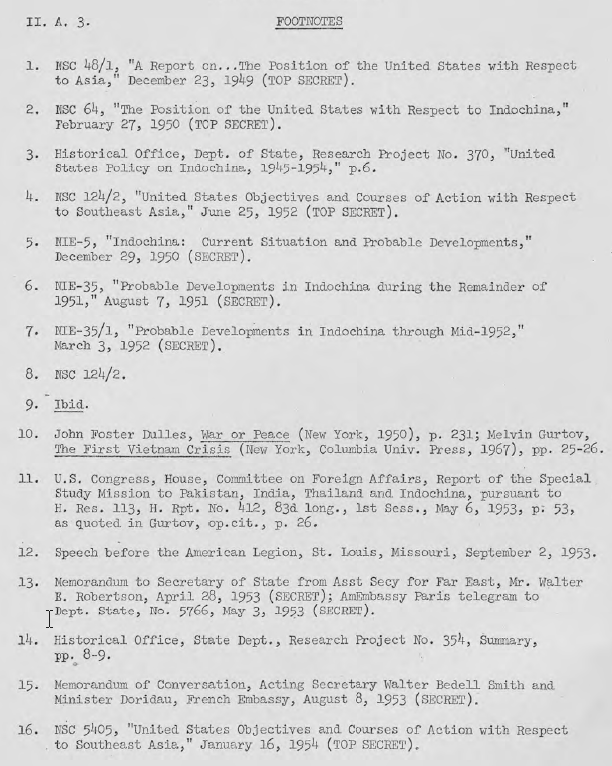

Trang
A-45
A-46
A-47
A-49
A-50
A-50
A-51
NHẬN THỨC VỀ MỐI ĐE DỌA CỦA CỘNG SẢN
ĐỐI VỚI ĐÔNG NAM Á VÀ QUYỀN LỢI CƠ BẢN CỦA HOA KỲ
Có ba nhận thức lớn đã chế ngự những suy tính và hoạch định chính sách của Hoa Kỳ về Đông Dương trong những năm 1950-1954. Đầu tiên là tầm quan trọng ngày càng tăng của châu Á trong nền chính trị thế giới. Quá trình chuyển giao quyền lực từ đế quốc thực dân cho các quốc gia độc lập, như người ta đã tin, sẽ tạo ra một khoảng trống quyền lực và những điều kiện của sự bất ổn sẽ làm cho Châu Á có khả năng trở thành một chiến trường trong cuộc xung đột Đông-Tây trong chiến tranh lạnh. Thứ hai, có những xu hướng không thể phủ nhận là xem "mối đe dọa cộng sản" trên toàn thế giới như là nguyên khối. Điều này có thể hiểu được do ảnh hưởng tương đối sâu rộng tác động bởi Liên Xô trên các quốc gia cộng sản khác, và các đảng cộng sản trong các quốc gia không cộng sản. Hơn nữa, phương Tây, và đặc biệt là Hoa Kỳ bị thách thức bởi các chính sách bành trướng công khai công bố bởi hầu như tất cả các nhà lãnh đạo các phong trào cộng sản. Thứ ba, cố gắng của chế độ Cộng sản Hồ Chí Minh để đuổi người Pháp ra khỏi Đông Dương được xem như biểu hiện ở Đông Nam Á về ý định xâm lược cộng sản trên toàn thế giới. Việc Pháp chống trả Hồ, vì vậy, được xem là vị trí quan trọng trên chiến tuyến cùng với phương Tây ngăn chận nào cộng sản.
Ba nhận thức nói trên giúp giải thích các suy đoán chính thức của Washington rằng nếu Đông Dương "bị mất" vào tay cộng sản, các quốc gia còn lại của Đông Nam Á không thể chống chọi nổi với sự xâm nhập của cộng sản và sẽ bị đổ theo như phản ứng dây chuyền. Quan niệm chiến lược này về đe dọa cộng sản ở Đông Nam Á đã có trước khi chiến tranh Triều Tiên bùng nổ vào tháng 6 năm 1950. Nó có thể đã được thai nghén vào thời điểm Trung Hoa Quốc Gia rút chạy khỏi đại lục Trung Quốc. Tài liệu NSC48/1 [của Hội Đồng An Ninh Quốc Gia – HĐANQG Mỹ] là tài liệu khung quan trọng cho khái niệm này. Nó đã được soạn thảo trong tháng 6 năm 1949, sau khi Bộ trưởng Quốc phòng Louis Johnson đã bày tỏ lo ngại về các diễn biến đang xảy ra ở châu Á và đề nghị mở rộng cách tiếp cận song phương, bằng biên bản ghi nhớ giữa quốc gia với quốc gia, thành một kế hoạch khu vực, NSC48/1 báo cáo rằng "việc quyền lực cộng sản đã được mở rộng ở Trung Quốc là một thất bại đau thương chính trị cho chúng ta... Nếu khu vực Đông Nam Á cũng bị cuốn theo cộng sản, chúng ta sẽ chịu một thất bại thảm hại về chính trị và những ảnh hưởng của nó sẽ được cảm nhận trong suốt phần còn lại của thế giới, đặc biệt là ở Trung Đông và sau đó Úc sẽ bị phơi trần một cách nghiêm trọng " 1/
Vào năm 1949, Nga chứ không phải là Trung Quốc đã được nhìn thấy như là nguồn đe dọa cộng sản chủ yếu ở châu Á. Mặc dù đã có thừa nhận rằng qua thời gian Trung Quốc (hay Nhật Bản hay Ấn Độ) có thể có cố gắng thống trị châu Á, --
"Bây giờ và trong tương lai gần, chính Liên Xô đang đe dọa thống trị châu Á bằng các công cụ bổ sung cho âm mưu của cộng sản và bằng áp lực ngoại giao hỗ trợ bởi sức mạnh quân sự. Trong một tương lai có thể thấy trước, do đó, mục tiêu trước mắt của chúng ta phải ngăn chận và chỗ nào có thể làm được, làm suy giảm sức mạnh và ảnh hưởng của Liên Xô ở châu Á đến mức độ mà Liên Xô không còn khả năng đe dọa an ninh của Hoa Kỳ từ khu vực đó và làm cho Liên Xô sẽ phải gặp những trở ngại nghiêm trọng một khi họ có những nỗ lực đe dọa hòa bình, độc lập dân tộc hay sự ổn định của các quốc gia châu Á. "
NSC 48/1 cũng công nhận rằng "cuộc xung đột dân tộc chống thực dân cung cấp một mãnh đất màu mỡ cho các phong trào nổi dậy cộng sản, và bây giờ cũng rõ ràng rằng Đông Nam Á là mục tiêu cho một cuộc tấn công phối hợp do điện Kremlin đạo diễn.”
Vào thời điểm đó, NSC [Hội Đồng An Ninh Quốc Gia] tin rằng Hoa Kỳ, như một cường quốc phương Tây, trong bất kỳ khu vực nào mà phần lớn dân số đã nghi ngại về ảnh hưởng của phương Tây, thì nên chừng mực càng hạn chế càng tốt việc lấy vai trò dẫn đầu trong khu vực Đông Nam Á. Thay vào đó, Hoa Kỳ nên "khuyến khích các nước Ấn Độ, Pakistan, Philippines và các nước châu Á khác giữ vai trò lãnh đạo để giải quyết các vấn đề chung của khu vực," công nhận rằng “các chính phủ không cộng sản của Nam Á đã tạo thành một bức tường thành chống lại việc cộng sản mở rộng ở châu Á ". NSC 48/2 đã chỉ ra rằng nên có một sự chú ý đặc biệt trên các vấn đề Đông Dương, nơi mà "người Pháp phải khẩn cấp có những hành động tháo gỡ các rào cản để Bảo Đại hay các nhà lãnh đạo quốc gia không cộng sản có được sự hỗ trợ của một tỷ lệ đáng kể người Việt Nam ".
Đông Dương là đặc biệt quan trọng bởi vì nó là khu vực duy nhất tiếp giáp với Trung Quốc mà ở đó có một đội quân lớn của châu Âu đang xung đột vũ trang với lực lượng "cộng sản". Cộng sản Trung Quốc được cho là đã cung cấp cho Việt Minh một hỗ trợ vật chất đáng kể. Các nguồn tin chính thức của Pháp báo cáo rằng đã có một số binh lính Trung Cộng tại Bắc Kỳ, cũng như số lượng lớn khác đã sẵn sàng hành động chống Pháp đang ở phía bên biên giới trên phần đất của Trung Quốc. Biên bản NSC đầu tiên là biên bản duy nhất lo chuyện Đông Dương (NSC 64) đã được thông qua như một chính sách ngày 27 tháng ba 1950. Tài liệu này đã lưu ý việc Trung Cộng hỗ trợ Việt Minh và ước tính rằng nó nghi ngờ rằng các lực lượng viễn chinh Pháp, kết hợp với quân đội Đông Dương, có thể ngăn chận thành công các lực lượng của Hồ Chí Minh có thể được tăng cường bởi hoặc quân đội Trung Cộng vượt qua biên giới, hoặc nhận vũ khí và vật liệu từ các nguồn Cộng Sản với số lượng lớn.
Nên lưu ý rằng NSC 64 - bằng văn bản, đã được đưa ra bởi chính quyền Truman và trước cả lúc chiến tranh Triều Tiên bùng nổ - đã nhận định rằng "mối đe dọa Cộng Sản xâm lược Đông Dương chỉ là một kế hoạch giai đoạn của cộng sản nhằm thống trị tất cả các nước Đông Nam Á. Văn bản này được kết thúc với một đoạn văn mà sau này đã được biết đến như là " thuyết domino ":
"Điều quan trọng là đối với lợi ích an ninh của Hoa Kỳ, tất cả các biện pháp thực tế phải được thực hiện để ngăn chặn việc cộng sản mở rộng hơn nữa ở Đông Nam Á. Đông Dương là một khu vực quan trọng của khu vực Đông Nam Á và đang bị đe dọa ngay lúc này.
"Các nước láng giềng Thái Lan và Miến Điện dự kiến có thể bị Cộng sản thống trị nếu Đông Dương bị kiểm soát bởi một chính phủ Cộng sản. Sự cân bằng của khu vực Đông Nam Á sau đó sẽ bị nguy hiểm nghiêm trọng. " 2/
Chiến tranh Triều Tiên bùng nổ, và quyết định của Hoa Kỳ chống lại xâm lược Bắc Triều Tiên, chỉ qua đêm đã mài sắc suy nghĩ và hành động của chúng ta đối với khu vực Đông Nam Á. Phản ứng quân sự Hoa Kỳ là biểu hiện một cách cụ thể nhất có thể có với niềm tin cơ bản rằng một chiến tuyến ở khu vực Đông Nam Á là rất cần thiết cho lợi ích an ninh của Mỹ. Cuộc đấu tranh của Pháp ở Đông Dương đã được nhìn nhiều hơn so với trước kia như là một phần của việc ngăn chặn chủ nghĩa cộng sản trong vùng này của thế giới. Theo đó, Hoa Kỳ đã tăng cường và mở rộng các chương trình viện trợ ở Đông Dương. Các lô hàng viện trợ quân sự cho Đông Dương vào năm 1951 chiếm ưu tiên thứ hai cao nhất, chỉ sau các chương trình cho chiến tranh ở Triều Tiên. 3/
Một hậu quả khác của chiến tranh Triều Tiên, và đặc biệt là sự can thiệp của Trung Cộng, là nhận thức rằngTrung Cộng đã thay thế Liên Xô như là nguồn đe dọa cộng sản chủ yếu trong khu vực Đông Nam Á. Điều này đã được thể hiện rõ ràng trong tài liệu NSC-124/2 (tháng 6 năm 1952) nói rằng "sự nguy hiểm của một cuộc tấn công quân sự công khai chống lại Đông Nam Á vốn đã sẵn có với sự tồn tại của một Trung Quốc Cộng sản thù địch và hung hăng."
"Thuyết domino" ở dạng tinh khiết nhất của nó đã được ghi trong phần " Đánh Giá Tổng Quát" của NSC-124/2. Nó liên kết việc mất bất kỳ một nhà nước nào của Đông Nam Á với sự ổn định của châu Âu và an ninh của Hoa Kỳ:
[chỗ này không thấy phần số 1. – người dịch ghi nhận]
"2. Cộng sản thống trị, bất cứ bằng phương cách nào, tất cả khu vực Đông Nam Á sẽ gây nguy hiểm một cách nghiêm túc trong ngắn hạn, và gây nguy hiểm nghiêm trọng trong dài hạn cho an ninh của Hoa Kỳ.
"a. Sự mất mát của bất kỳ quốc gia Đông Nam Á nào vào vòng kiểm soát của cộng sản như hậu quả của sự xâm lược Cộng sản Trung Quốc, công khai hay bí mật, đều sẽ có hậu quả quan trọng về tâm lý, chính trị và kinh tế. Trong trường hợp không kháng cự có hiệu quả và kịp thời, sự mất mát của một bất kỳ nước nào có thể sẽ dẫn một sự thần phục tương đối nhanh hay một sự liên kết với cộng sản của các nước còn lại. Hơn nữa, một sự liên kết với cộng sản của phần còn lại của khu vực Đông Nam Á và Ấn Độ, và trong dài hạn, Trung Đông (với các trường hợp ngoại lệ có thể xảy ra ít nhất là Pakistan và Thổ Nhĩ Kỳ) sẽ rất có thể dần dần theo sau. Sự liên kết rộng rãi như thế sẽ gây nguy hiểm cho sự ổn định và an ninh của châu Âu.
“b. Việc Cộng sản kiểm soát tất cả các nước Đông Nam Á sẽ làm cho vị trí của Hoa Kỳ trong chuỗi hải đảo Thái Bình Dương trở nên không ổn định và sẽ gây nguy hiểm nghiêm trọng cho lợi ích an ninh cơ bản của Hoa Kỳ ở vùng Viễn Đông.
"c. Đông Nam Á, đặc biệt là Malaysia và Indonesia, là nguồn chính của cao su thiên nhiên và thiếc, và là nơi sản xuất dầu khí và các mặt hàng chiến lược quan trọng khác. Gạo xuất khẩu của Miến Điện và Thái Lan là cực kỳ quan trọng đối với Malaysia, Tích Lan và Hồng Kông và có ý nghĩa đáng kể đến Nhật Bản và Ấn Độ, tất cả các khu quan trọng của châu Á tự do.
d. Mất khu vực Đông Nam Á, đặc biệt là của Malaysia và Indonesia, có thể dẫn đến áp lực kinh tế và chính trị ở Nhật Bản cũng như làm cho trở nên cực kỳ khó khăn để ngăn chặn việc Nhật Bản cuối cùng rơi vào tay cộng sản." 4/
Khả năng một sự can thiệp của Trung Cộng quy mô lớn ở Đông Dương, tương tự như sự can thiệp của Trung Cộng tại Hàn Quốc, đã thống trị tư duy của các nhà hoạch định chính sách Hoa Kỳ sau khi cuộc chiến tranh Triều Tiên bắt đầu. Sự can thiệp như vậy sẽ không còn bị bất ngờ khi những con số lớn hơn của quân đội Trung Cộng đông đảo dọc theo biên giới Bắc Bộ và sự hỗ trợ trang thiết bị cho Việt Minh. NIE – Ước Tính Tình Báo Quốc Gia [National Intelligence Estimate] tháng 12 năm 1950 xem việc Trung Cộng can thiệp trực tiếp là "sắp xảy ra." 5/ Năm kế tiếp, đã có ước tính rằng sau hiệp ước đình chiến ở Hàn Quốc, Trung Cộng sẽ có khả năng can thiệp với sức mạnh đáng kể, nhưng sẽ kềm chế hành động công khai bởi một số yếu tố, bao gồm cả nguy cơ bị Hoa Kỳ trả đủa và những bất lợi khi tham gia trong một chiến dịch kéo dài. 6/ Đến đầu năm 1952, vị trí của Pháp đã cho thấy có dấu hiệu suy thoái, các cơ quan tình báo tin rằng Trung Cộng sẽ bằng lòng tiếp tục giúp đỡ Việt Minh mà không cần tham gia trực tiếp (ngoại trừ các viện trợ vật chất), trừ khi bị khiêu khích. 7/ Vì vậy, cộng đồng tình báo, sau khi ước tính nguy cơ cao của sự can thiệp của Trung Quốc vào lúc bắt đầu của chiến tranh Triều Tiên, đã từng bước ước tính giảm đi khả năng chiến tranh Đông Dương được mở rộng lớn hơn khi có những dấu hiệu cho thấy Việt Minh ngày càng làm tốt việc của họ [thắng thế].
Tuy nhiên,,NSC [Hội Đồng An Ninh Quốc Gia] tiến hành vào năm 1952 lập danh sách một chuỗi hành động "kiên quyết bảo vệ" Đông Dương trong trường hợp có một sự can thiệp của Trung Quốc quy mô lớn. Nó bao gồm việc đưa ra các lực lượng không quân và hải quân, ngăn chặn các trục lộ giao thông của Trung Quốc, kể cả các nơi thích hợp bên trong Trung Quốc; và phong tỏa bờ biển Trung Quốc bằng Hải Quân. Nếu những "các hành động tối thiểu " không chứng minh được đầy đủ [hiệu năng], Hoa Kỳ nên có hành động trên không và trên biển "chống lại tất cả các mục tiêu quân sự thích đáng ở Trung Quốc", và khi có thể, kết hợp với các lực lượng Anh và Pháp. 8/
Trong khi đưa ra hành động đề nghị này, NSC tập trung vào dự tính là ít có khả năng Trung Quốc can thiệp chứ không phải là ngẫu nhiên liên quan gì đến việc bản thân vị thế [quân sự[ Pháp ở Đông Dương tiếp tục bị suy thoái. Họ đã đề nghị như vậy mặc dù thực tế NSC 124/2 đã thừa nhận rằng "mối đe dọa chính là bản thân tình hình ở Đông Dương (gia tăng những nỗ lực lật đổ của các lực lượng cộng sản bản địa, gia tăng hoạt động du kích, và Việt Minh gia tăng kiểm soát dân sự về dân số và lãnh thổ). Rõ ràng, NSC muốn làm cho rõ ràng rằng sự tham gia trực tiếp của Hoa Kỳ ở Đông Dương đã được giới hạn để đối phó với sự tham gia trực tiếp của Trung Cộng. 9/
Hai sự kiện vào năm 1953 đã làm sâu sắc hơn những cam kết của Hoa Kỳ ở Đông Dương. Việc đầu tiên là sự xuất hiện của một chính quyền thuộc đảng Cộng hòa sau một thời gian dài mà đảng Cộng hòa đã liên tục cáo buộc chính quyền Truman là phải chịu trách nhiệm về việc "mất" Trung Quốc vào tay cộng sản. Các bài viết và các bài phát biểu của John Foster Dulles trước khi bầu cử không để lại nghi ngờ gì khi ông coi khu vực Đông Nam Á như một khu vực quan trọng trong cuộc xung đột với chủ nghĩa đế quốc "cộng sản", và rằng đó là điều quan trọng để đặt ra một chiến tuyến ngăn chận nằm phía Bắc của vựa lúa của châu Á tức bán đảo Đông Dương. 10/ Trong Thông điệp Liên bang đầu tiên vào ngày 03 tháng 2 năm 1953, Tổng thống Eisenhower hứa hẹn một "chính sách ngoại giao mới, tích cực". Ông đã liên kết sự xâm lăng của các thế lực cộng sản ở Hàn Quốc và Malaysia với Đông Dương. Dulles sau đó đã nói về Hàn Quốc và Đông Dương như hai cánh sườn, với kẻ thù chính - Trung Quốc Đỏ - ở trung tâm. Một ủy ban nghiên cứu đặc biệt, đứng đầu là dân biểu Walter Judd, một phát ngôn viên của đảng Cộng hòa nhiều hiê>u biết về châu Á, đã khảo sát vùng Viễn Đông và báo cáo về quan điểm của các người quan trọng trong cuộc:
"Khu vực Đông Dương là vô cùng giàu có về gạo, cao su, than đá, quặng sắt, vị trí của nó làm cho nó có một chiến lược quan trọng với phần còn lại của Đông Nam Á. Nếu Đông Dương bị mất, Thái Lan và Miến Điện sẽ bị nguy hiểm cao độ, Malaysia, Singapore và thậm chí cả Indonesia sẽ trở nên mỏng manh đối diện với quyền lực Cộng Sản.... chủ nghĩa cộng sản sau đó sẽ ở một vị trí đặc biệt để hoàn thành sự sai lầm của một cuộc cách mạng chính trị và xã hội, lây lan khắp Châu Á.... sự thành công của chủ nghĩa cộng sản ở Đông Dương phải được ngăn chặn". 11/
Chính quyền Cộng hòa rõ ràng nhằm mục đích để ngăn chặn sự mất mát của Đông Dương bằng cách đứng lên, thẳng thắn chống cộng sản.
Thứ hai, hiệp ước đình chiến ở Hàn Quốc đã tạo ra e ngại rằng những người Cộng sản Trung Quốc bây giờ sẽ chuyển sự chú ý của họ tới Đông Dương. Tổng thống Eisenhower đã cảnh báo trong một bài phát biểu vào ngày 16 tháng tư 1953, rằng bất kỳ hiệp ước đình chiến ở Hàn Quốc mà chỉ đơn thuần là để đưa ra lực lượng vũ trang để theo đuổi một cuộc tấn công khác sẽ là một gian lận. Ngoại trưởng Dulles tiếp tục chủ đề này sau khi hiệp ước đình chiến Hàn Quốc trong một bài phát biểu vào ngày 02 tháng chín năm 1953, về cuộc chiến ở Đông Dương. Sau khi ghi nhận rằng "một mặt trận đơn nhất hung hăng của Cộng sản kéo dài từ Hàn Quốc ở phía bắc đến Đông Dương ở phía Nam", ông nói:
"Cộng sản Trung Quốc đã và đang đào tạo, trang bị và cung cấp các lực lượng Cộng sản ở Đông Dương. Có nguy cơ, như ở Hàn Quốc, Trung Cộng có thể gửi quân đội của mình vào Đông Dương. Các chế độ Cộng sản Trung Quốc nên nhận ra rằng đó là một sự xâm lược thứ hai không thể xảy ra mà không có hậu quả nghiêm trọng mà nó có thể không chỉ giới hạn ở Đông Dương. Tôi nói điều này một cách tỉnh táo... với hy vọng ngăn chặn một tính toán sai lầm khác của kẻ xâm lược. " 12/
Bên dưới những cảnh báo này tới Trung Quốc là niềm tin rằng sự khác biệt giữa thành công hay thất bại trong việc tránh Hồ Chí Minh tiếp quản toàn bộ Việt Nam có thể phụ thuộc vào mức độ viện trợ hoặc tham gia trực tiếp của Trung Cộng. Tín hiệu cảnh báo Trung Quốc có lẽ đã được thiết kế để ngăn sự tham gia hơn nữa của Trung Quốc. Tiềm ẩn trong các tín hiệu là sự đe dọa rằng nếu Trung Quốc đi vào chiến tranh, Hoa Kỳ có thể buộc phải theo cuộc cho phù hợp, tốt hơn là với sự tham gia của các đồng minh, nhưng nếu cần thiết, một mình. Hơn nữa, Chính quyền Eisenhower ngụ ý rằng phù hợp với chính sách trả đủa khổng lồ, Hoa Kỳ có thể đưa ra một đòn trừng phạt bằng hạt nhân vào Trung Quốc mà không nhất thiết phải dùng đến các lực lượng trên bộ của mình trong một chiến tranh ở châu Á.
Tâm trạng mới ở Washington được tạo ra bởi nhận thức chiến lược của chính quyền mới với hiệp ước đình chiến Triều Tiên, việc Việt Minh xâm lược Lào vào mùa xuân năm 1953 và việc dân Pháp mệt mỏi sâu sắc hơn vì cuộc chiến cộng chung giúp tăng sức mạnh cho những người ủng hộ một chính sách quyết đoán hơn ở Đông Dương. Hoa Kỳ vội vàng cung cấp tiếp liệu cho Lào và Thái Lan tháng 5 năm 1953 và gửi sáu chiếc máy bay C-119 với các phi hành đoàn dân sự cho việc không vận vào Lào. 13/ tăng một cách đáng kể khối lượng và tiến độ viện trợ quân sự Hoa Kỳ cho lực lượng Liên minh Pháp. Đối với năm tài chính 1954, 460 triệu USD viện trợ quân sự đã được lên kế hoạch. Quốc hội chỉ chấp thuận $ 400 triệu USD, nhưng sau bài trình bày của người Pháp về Kế hoạch Navarre $ 385 triệu đã được quyết định thêm bởi NSC. 14/ Không phản đối nào được đưa ra khi Pháp hỏi quan điểm của chúng ta vào tháng Tám, năm 1953, về việc chuyển một tiểu đoàn [của Pháp] từ Hàn Quốc vào Đông Dương và sau đó việc này đã được thi hành. 15/ Kế hoạch Navarre, bằng cách đưa ra một dạng chiến thắng hứa hẹn một thành công mà không cần có sự tham gia trực tiếp của các lực lượng quân sự Mỹ, bởi vì sức hấp dẫn của nó, hậu quả đã hướng tới việc chúng ta mở rộng cam kết giúp Pháp đạt được một giải pháp quân sự.
Trong tài liệu cuối cùng của NCS được chấp thuận trước khi tình hình Đông Dương đã hoàn toàn thay đổi tiếp theo sự thất bại của Pháp tại Điện Biên Phủ và Hội nghị Geneva, đã ghi rõ là "sự bảo vệ thành công Bắc Kỳ" là "nền tảng quốc phòng của lục địa khu vực Đông Nam Á, có thể ngoại trừ Malaysia" 16/ Tài liệu NSC 5405 đã đưa vào tính toán một vài quan tâm, nhưng có lẽ là không đủ, về việc vị thế của Pháp đã bi suy thoái kể từ khi NSC 124/2 được chấp thuận 18 tháng trước đó. Tuy nhiên, tài liệu này [NSC 5405] lặp đi lặp lại nguyên tắc domino một cách chi tiết, bao gồm các lời khuyên rằng “quan hệ hổ tương giữa các nước mà những hành động đối kháng có hiệu quả sẽ ngay lập tức cần thiết để ngăn ngừa sự mất mát của bất kỳ một quốc gia nào sẽ bị dẫn đến sự tuân phục, hay liên kết với cộng sản bởi các nước còn lại của Đông Nam Á và Indonesia ". Tài liệu cũng ghi chú rằng:
"Trong cuộc xung đột ở Đông Dương, những người Cộng sản và không cộng sản rõ ràng đối kháng lẫn nhau ở chiến trường. Sự thất bại trong cuộc đấu tranh ở Đông Dương, ngoài những tác động của nó ở Đông Nam Á và Nam Á, nó còn sẽ có những tác động nghiêm trọng nhất lên Hoa Kỳ và thế giới tự do ở châu Âu và các nơi khác.. "
Chủ đề về khả năng có thể đàm phán đã được đề cập trong NSC 5405, tiếp theo những quan sát cho thấy có các áp lực chính trị ở Pháp thúc đẩy chính phủ Pháp tìm một giải pháp qua đàm phán hơn là một giải pháp quân sự. Nó đã được ghi nhận (trước khi Điện Biên Phủ) là Kế hoạch Navarre nếu không thành công hoặc phải cam chịu thất bại, người Pháp sẽ đơn giản tìm cách thương lượng với các điều khoản tốt nhất có thể [cho họ], cho dù những điều khoản này không bảo đảm giữ được một Đông Dương không cộng sản.
Về vấn đề này, NSC quyết định Hoa Kỳ sẽ sử dụng mọi phương cách khả thi để ảnh hưởng lên Chính phủ Pháp để ngăn họ kết thúc cuộc chiến với những điều kiện "không phù hợp" với mục tiêu cơ bản của Hoa Kỳ. Nên cho người Pháp biết: (1) thiếu một cải thiện đáng kể trên tình hình quân sự thì không có cơ sở để đàm phán về các điều khoản chấp nhận được, (2) Hoa Kỳ sẽ. "dứt khoát chống lại bấy cứ ý tưởng nào" về việc ngưng bắn như là một sơ bộ để đàm phán, bởi vì một sự ngưng bắn như vậy sẽ dẫn đến sự suy giảm vĩnh viễn của vị thế quân Pháp-Việt ở Đông Dương; (3) một chế độ liên minh trên danh nghĩa không cộng sản cuối cùng sẽ giao đất nước vào tay của Hồ Chí Minh với không còn cơ hội nào cho sự thay thế bởi Pháp, Hoa Kỳ hoặc Vương Quốc Anh. [Nhấn mạnh Thêm]
Để kết luận, có hai bình luận có thể được đưa ra:
Theo đó, sự hiểu biết về cá tính của các nước và khu vực Đông Nam Á và sự khác biệt xã hội của họ đã không được tìm hiểu đầy đủ. Có lẽ các nhà hoạch định chính sách của Washington đã thiếu hiểu biết chuyên sâu về khu vực. Trước Thế chiến II Không ai dự kiến rằng Hoa Kỳ sẽ được yêu cầu giữ một vị trí lãnh đạo một lãnh thổ xa xôi thuộc địa của các đồng minh châu Âu của chúng ta. Trong cái nhìn thiển cận, những thiếu sót này đã dẫn đến niềm tin dối trá là một Đông Dương trung lập hoặc cộng sản chắc chắn sẽ hút các quốc gia khác của châu Á vào khối cộng sản hay khối trung lập chủ nghĩa. Nhưng sự "dối trá" đó cũng không rõ ràng đương nhiên, và sau này, đến bây giờ cũng không thể chứng minh được khi nhìn lại quá khứ.
